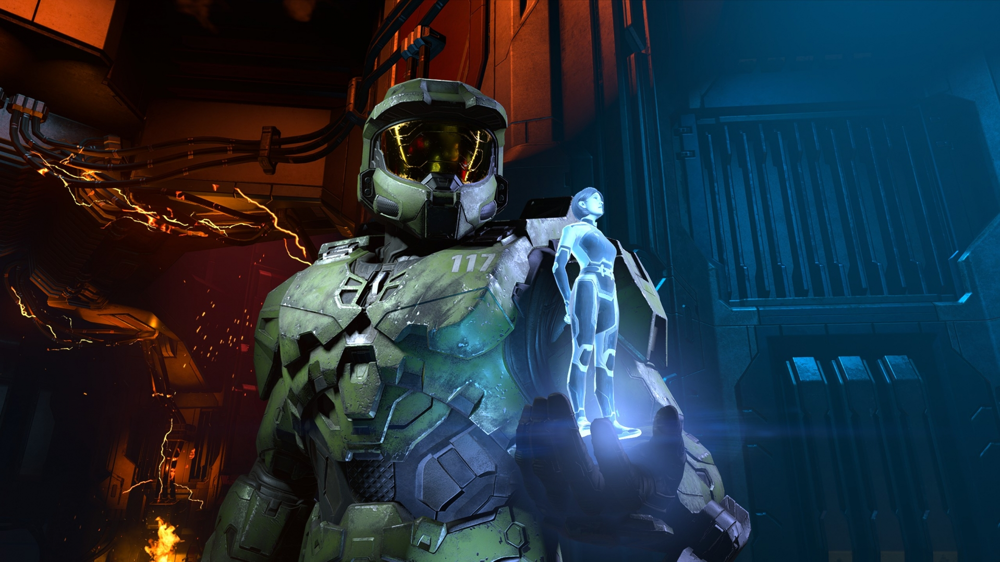
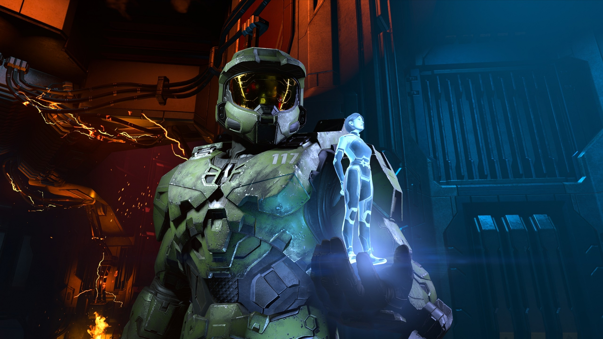
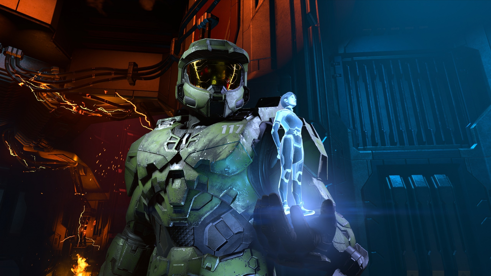

Galeria
 

Halo es una franquicia de videojuegos de ciencia ficción creada y desarrollada por Bungie Studios hasta Halo
Reach, y gestionada ahora por 343 Industries, propiedad de Xbox Game Studios. La serie se centra en una guerra
interestelar entre la humanidad y una alianza teocrática de alienígenas conocidos como Covenant. Más adelante
se encontrarán más amenazas como los Floods y los Prometeos. El Covenant es guiado por sus líderes religiosos,
los profetas, y adoran a una antigua civilización conocida como los Forerunners, quienes perecieron en combate
con el parásito Flood. Muchos de los juegos se centran en las experiencias del Jefe Maestro John-117 (Master Chief),
un súper soldado biológicamente mejorado, y su compañera inteligencia artificial (IA), Cortana. El término «Halo» se
refiere a las mega estructuras Halo: grandes estructuras habitables en forma de anillos, instaladas en el espacio exterior.
Los juegos de la serie han sido considerados de los mejores Videojuegos de disparos en primera persona para videoconsola y
es visto como uno de los juegos insignia de la consola Xbox Esto ha llevado a la competencia a generar los videojuegos
llamados Halo Killers que compitan o aspiren a superar a Halo.
Reforzados por el éxito de Halo: Combat Evolved y por la inmensa campañas de marketing de Microsoft, sus secuelas rompieron
los récords de ventas. Desde el inicio de la saga en 2001 se han vendido más de 65 millones de copias, con un beneficio solo
en venta de videojuegos superior a los 3.400 millones de dólares.
A la comunidad de aficionados se le denomina Halo Nation. Gracias a esto Halo ha formado parte con gran rapidez de la cultura
popular estadounidense, ya que ha sido referida en multitud de medios como cómics, libros, novelas gráficas, música, y cortometrajes.
